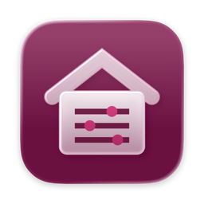
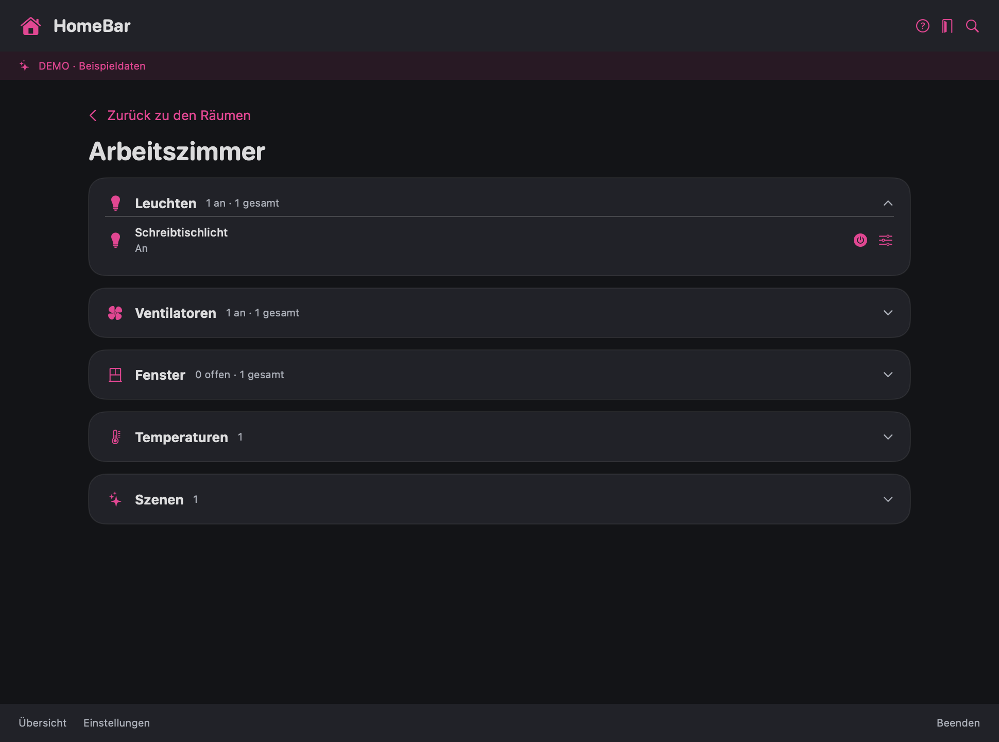
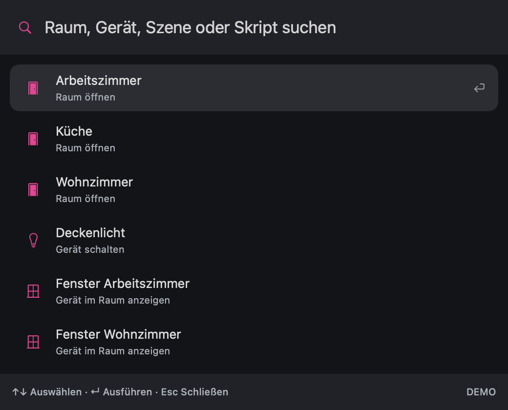

Das Zuhause sehen
Das Popup bündelt Hausstatus, auffällige Räume und Favoriten. So beginnt die kurze Kontrolle dort, wo du ohnehin arbeitest.

HomeBar von Makovio LabsHome Assistant. Direkt am Mac.
HomeBar sitzt als kleines Haus-Symbol oben in der Mac-Menüleiste. Ein Klick öffnet direkt darunter ein kompaktes Popup: Hausstatus sehen, Licht steuern und Räume öffnen, ohne den Browser aufzurufen.
Version 1 in geschlossener Beta · Noch keine offene Beta

Menüleiste → kleines Popup · Vorschau mit Beispieldaten
Die Idee hinter HomeBar
Home Assistant ist die Zentrale für dein Zuhause. Für einen kurzen Blick auf den Hausstatus oder eine Lichtaktion ist der Weg über die Weboberfläche aber oft länger als nötig. HomeBar macht genau diese Momente direkt in der macOS-Menüleiste erreichbar.
Ein Moment mit HomeBar
Du sitzt am Mac und fragst dich, ob im Wohnzimmer noch Licht brennt. Das Haus-Symbol wartet oben in der Menüleiste. Ein Klick zeigt dir im kleinen Popup, was gerade wichtig ist.
Das Popup bündelt Hausstatus, auffällige Räume und Favoriten. So beginnt die kurze Kontrolle dort, wo du ohnehin arbeitest.
Öffne einen Raum, schalte oder dimme eine unterstützte Leuchte. Szenen und Skripte aus Home Assistant erreichst du über Favoriten oder die Suche.
„Ich gehe“ zeigt eingeschaltete Lichter sowie offene oder unbekannte Fensterzustände. Du entscheidest, was noch zu tun ist.
Was HomeBar kann
Die wichtigsten Informationen und Aktionen sind dort, wo du sie schnell erreichst: in der Menüleiste.
Sieh auf einen Blick beleuchtete Räume, offene Fenster und aktive Geräte.
Öffne Raumdetails und schalte oder dimme unterstützte Leuchten direkt in HomeBar.
Finde Räume, Geräte, Szenen und Skripte. Lege häufig genutzte Aktionen als Favoriten ab.
Prüfe vor dem Verlassen eingeschaltete Lichter und offene oder unbekannte Fensterzustände.
Einblicke in die App
Diese Ansichten stammen direkt aus dem Demo-Modus der App und enthalten ausschließlich Beispieldaten.



Die Details
HomeBar nutzt deine vorhandene Home-Assistant-Installation und ordnet die täglichen Wege für den Mac neu.
Öffne die Suche mit ⌘K oder einem wählbaren globalen Kürzel. Finde Räume, Geräte, Szenen und Skripte.
Lege Favoriten und eigene Gruppen an, damit häufig genutzte Geräte und Aktionen schnell erreichbar bleiben.
HomeBar zeigt die Zustände, die Home Assistant meldet. Bei der „Ich gehe“-Kontrolle werden unbekannte Fensterzustände ausdrücklich genannt.
Die Verbindung nutzt deine bestehende Home-Assistant-Adresse. Das Zugangstoken liegt im macOS-Schlüsselbund; HomeBar braucht keine eigene Cloud.
Gut zu wissen
Für einen Test benötigst du einen Mac mit macOS 26 oder neuer und eine erreichbare Home-Assistant-Installation. Die Verbindung richtest du in der App mit deiner Home-Assistant-Adresse und einem Zugangstoken ein.
Entwicklungsstand
Der Funktionsumfang für Version 1 steht. HomeBar befindet sich in einer geschlossenen Beta: Wir sammeln Rückmeldungen mit ausgewählten Testpersonen, bevor wir über die nächsten Schritte entscheiden.
Die App kann vorgestellt werden.
Testanfragen sind per E-Mail möglich; Einladungen erfolgen persönlich.
Noch nicht gestartet. Es gibt derzeit keinen öffentlichen Download.
Geschlossene Beta
Version 1 ist in der Beta-Phase. Wenn du HomeBar ausprobieren möchtest, schreib uns gern. Wir vergeben Testzugänge persönlich; eine offene Beta gibt es noch nicht.